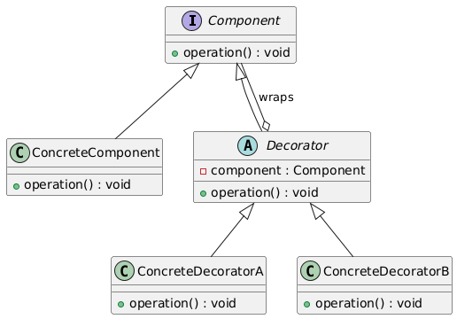

The Decorator pattern in modern C++
The Decorator pattern adds behaviour to a single object by wrapping it in another object with the same interface. The wrapper forwards each call to the object inside and adds its own part before or after. Because a wrapper looks exactly like the thing it wraps, you can wrap a wrapper, and stack as many layers as you need at runtime.
It's the alternative to building every combination with subclasses. If a coffee can have milk, mocha or soya in any combination and quantity, subclasses like DarkRoastWithDoubleMochaAndMilk explode in number. Decorators let you build that drink by wrapping a DarkRoast in two Mochas and a Milk.
The pattern comes from Design Patterns (Gamma, Helm, Johnson and Vlissides, 1994), and the coffee shop example below is the one used in Head First Design Patterns.
The structure

There are four roles. The component is the interface everyone shares. A concrete component is the real object at the centre. The decorator implements the same interface and holds a component. Concrete decorators each add one piece of behaviour.
The textbook case outside C++ is Java's I/O library, where a BufferedInputStream wraps a FileInputStream. In everyday code, a logging or caching wrapper around a service is the same idea.
Example: a coffee shop
The shop sells a few coffees, and customers add condiments. Each condiment changes both the description and the price.
The component
namespace sb {
class Beverage {
public:
virtual ~Beverage() = default;
virtual std::string description() const = 0;
virtual int costPence() const = 0;
};
} // namespace sb
Prices are whole pence in an int. Money in a double works until it doesn't: 0.1 has no exact binary representation, and the rounding errors show up once you start adding and comparing prices.
The concrete components
namespace sb {
class Coffee : public Beverage {
public:
Coffee(std::string name, int pence) : m_name(std::move(name)), m_pence(pence) {}
std::string description() const override { return m_name; }
int costPence() const override { return m_pence; }
private:
std::string m_name;
int m_pence;
};
class Espresso : public Coffee {
public:
Espresso() : Coffee("Espresso", 199) {}
};
class DarkRoast : public Coffee {
public:
DarkRoast() : Coffee("Dark Roast Coffee", 199) {}
};
class HouseBlend : public Coffee {
public:
HouseBlend() : Coffee("House Blend Coffee", 189) {}
};
} // namespace sb
Each coffee passes its name and price to the constructor. The common alternative, assigning to a protected m_description inside each subclass's constructor body, leaves a moment where the object holds a placeholder and lets a new subclass forget to set it. Constructor arguments make the values impossible to skip.
The decorator base
namespace sb {
class Condiment : public Beverage {
public:
Condiment(std::unique_ptr<Beverage> inner, std::string name, int pence)
: m_inner(std::move(inner)), m_name(std::move(name)), m_pence(pence) {}
std::string description() const override { return m_inner->description() + ", " + m_name; }
int costPence() const override { return m_inner->costPence() + m_pence; }
private:
std::unique_ptr<Beverage> m_inner;
std::string m_name;
int m_pence;
};
} // namespace sb
The decorator owns the drink it wraps, and nothing else needs it, so std::unique_ptr is the right choice. The whole order is a chain of single owners: delete the outermost layer and every layer inside goes with it. std::shared_ptr would work too, but it would suggest that someone else shares the inner drink, which isn't true, and it costs a reference count for nothing.
Because every condiment does the same two things (append a name, add a price), the shared logic lives here once.
The concrete decorators
namespace sb {
class Milk : public Condiment {
public:
explicit Milk(std::unique_ptr<Beverage> b) : Condiment(std::move(b), "Milk", 10) {}
};
class Mocha : public Condiment {
public:
explicit Mocha(std::unique_ptr<Beverage> b) : Condiment(std::move(b), "Mocha", 20) {}
};
class Soya : public Condiment {
public:
explicit Soya(std::unique_ptr<Beverage> b) : Condiment(std::move(b), "Soya", 15) {}
};
} // namespace sb
Each condiment is now one line of real content. Adding oat milk tomorrow means adding one more class like these; nothing else changes.
Building orders
void print(const sb::Beverage& b) {
std::cout << std::format("{} £{}.{:02}\n", b.description(), b.costPence() / 100, b.costPence() % 100);
}
int main() {
using namespace sb;
print(Espresso{});
std::unique_ptr<Beverage> order = std::make_unique<DarkRoast>();
order = std::make_unique<Mocha>(std::move(order));
order = std::make_unique<Mocha>(std::move(order));
order = std::make_unique<Milk>(std::move(order));
print(*order);
auto order2 = std::make_unique<Milk>(std::make_unique<Mocha>(std::make_unique<Soya>(std::make_unique<HouseBlend>())));
print(*order2);
}
Output:
Espresso £1.99
Dark Roast Coffee, Mocha, Mocha, Milk £2.49
House Blend Coffee, Soya, Mocha, Milk £2.34
The first order is built one layer at a time, moving the drink into each new wrapper. The second nests the calls, which reads inside out: house blend, then soya, then mocha, then milk.
Trade-offs
Decorators keep each piece of behaviour small and let you combine them freely, which is why they show up in I/O libraries and middleware. The cost is many small objects and many small classes. A deep stack is harder to debug, because a call passes through several layers before it reaches real work, and the order of the layers can matter: a logging decorator outside a caching one logs every request, while the same decorator inside it logs only cache misses.
If you only ever need a fixed set of combinations known at compile time, plain composition or a template is simpler. Decorators earn their keep when the combination is decided at runtime.
Put together in one file with <format>, <iostream>, <memory>, <string> and <utility> included, the code above compiles with clang++ -std=c++20 -Wall -Wextra and runs cleanly under AddressSanitizer and UBSan. The Strategy and Observer posts cover two related patterns.